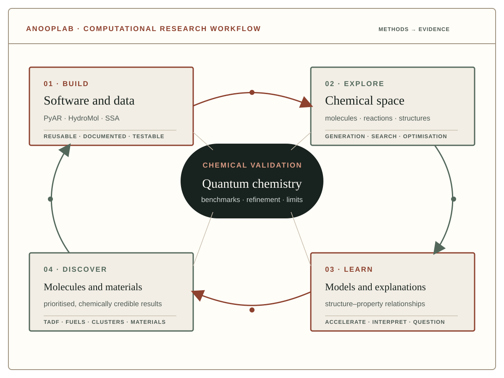

Chemical Space Exploration and Molecular Design of Organic Donor–Acceptor TADF Emitters
Journal of Materials Chemistry C · DOI: 10.1039/D6TC00707D
Computational chemistry · scientific software · molecular discovery
AnoopLab is currently based at Digital University Kerala, continuing a computational chemistry research programme developed across Digital University Kerala and IIT Kharagpur.
We develop and apply computational methods to explore molecular structure, reactivity, and materials. Machine learning is used judiciously alongside quantum chemistry, with emphasis on chemical interpretation, validation, and reproducible workflows.

01 · Research programme
The programme is organised around methods and questions rather than isolated application areas.
Reusable tools, documented workflows, and research datasets for chemical structure, reaction, and property exploration. PyAR is the principal software-development programme.
Interpretable structure–property relationships and ML-assisted quantum chemistry, with attention to chemical meaning, validation, and the limits of each model.
Systematic generation and exploration of molecules, reaction networks, aggregates, and nanoclusters, including global optimisation and multilevel refinement.
Quantum-chemical and data-driven investigations spanning functional molecules, high-energy-density hydrocarbons, nanoclusters, and materials-oriented chemical problems.
02 · Scientific evidence
Recent developments and representative methodological foundations.
Journal of Materials Chemistry C · DOI: 10.1039/D6TC00707D
Sustainable Energy & Fuels 10, 3240–3251 · DOI: 10.1039/D6SE00364H
Journal of Computational Chemistry 46, e70236
Frontiers in Chemistry 7, 644
Chemistry – A European Journal 24, 4885–4894
Computational and Theoretical Chemistry 1111, 69–81
03 · Software and data
Flagship programme
PyAR supports automated exploration of aggregates, reaction pathways, solvation structures, and atomic clusters. Its continued development is central to the group's ambition in software-enabled computational chemistry.
Repository and documentationA searchable dataset and chemical-space explorer for hydrocarbons.
Explore HydroMolAn implementation of Gillespie's stochastic simulation algorithm.
View the repository04 · People and continuity
Current researchers are shown here; the complete alumni record is maintained separately.
 A. AnoopPrincipal Investigator · Professor, Digital University Kerala
A. AnoopPrincipal Investigator · Professor, Digital University Kerala
 Bhrigu ChakrabortyPhD student · jointly supervised with Prof. P. K. Chattaraj
Bhrigu ChakrabortyPhD student · jointly supervised with Prof. P. K. Chattaraj
 Lazumla SherpaPhD student · jointly supervised with Prof. S. Bandhyopadyay
Lazumla SherpaPhD student · jointly supervised with Prof. S. Bandhyopadyay
 Sayan PaulPhD student · jointly supervised with Prof. N. D. Pradeep Singh
Sayan PaulPhD student · jointly supervised with Prof. N. D. Pradeep Singh
AnoopLab alumni include former PhD and MSc researchers working across academia, research institutes, and related scientific roles.
Complete alumni record and group photographs05 · Contact
School of Digital Sciences
Digital University Kerala
Technopark Phase IV, Pallipuram
Thiruvananthapuram, Kerala 695317